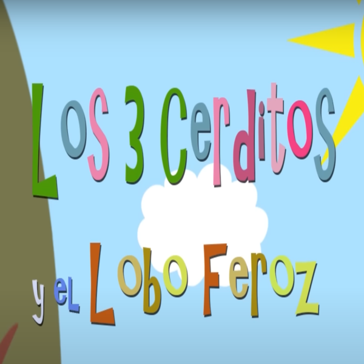
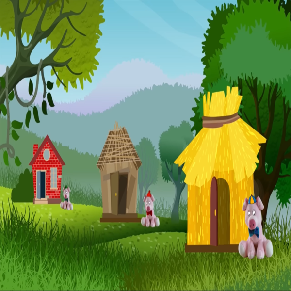

¿DE QUÉ SE TRATA?
Este cuento infantil, de autor anónimo, narra la historia de tres cerditos que deciden construir sus propias casas. Cada cerdito elige un material diferente para construir su hogar: paja, madera y ladrillos.
El lobo feroz aparece en la historia y trata de derribar las casas para comerse a los cerditos. Primero, sopla la casa de paja, que se derrumba fácilmente. Luego, derriba la casa de madera con un soplido más fuerte. Sin embargo, el tercer cerdito, que construyó su casa de ladrillos, logra resistir los intentos del lobo.
Al final, el lobo intenta entrar por la chimenea, pero el tercer cerdito astutamente ha encendido un fuego en la chimenea y el lobo se quema los pies, huyendo aullando. La historia enseña lecciones sobre la importancia del trabajo duro, la planificación y la perseverancia.

PROCESO
La idea de crear este sitio web nace de una actividad de Tecnología Multimedial 1 de la UNLP y adquirir conocimientos de p5js y html. Todo parte del tp3 de dicha materia, en la cual había que recrear una aventura gráfica de un famoso cuento a elección del estudiante. La mía, como se habrán dado cuenta, fue Los Tres Cerditos, debido a que lo considero un clásico de la literatura y de público conocimiento para cualquier espectador. Luego, en el tp5, aumenta la dificultad y era momento de recrear esta aventura pero en formato minijuego. La parte de la historia seleccionada por mí fue cuando el/los cerdito/s huyen hacia la próxima casa. El objetivo del minijuego es esquivar a los lobos y llegar a la casa antes de que se termine el tiempo y, así, lograr el tan ansiado final feliz. ¡Los espero ansioso a que jueguen y se diviertan intentandolo!
